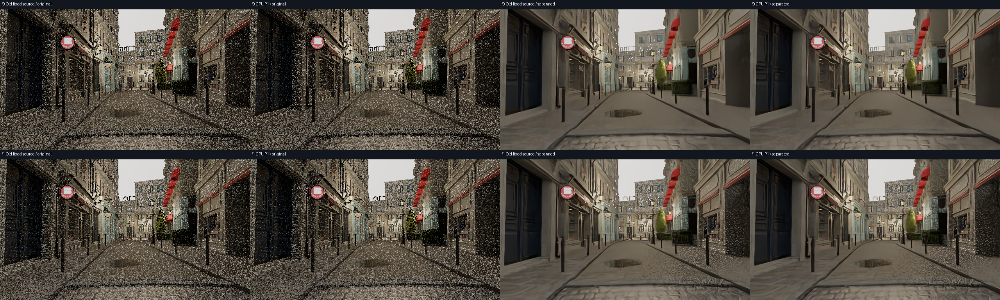
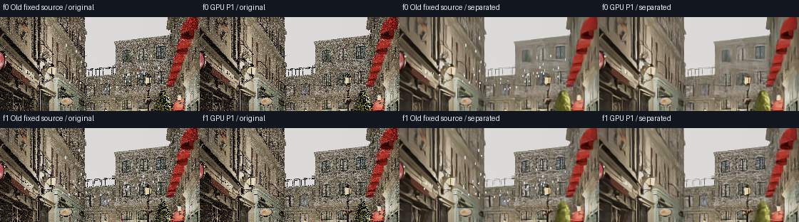

四列：旧固定源原始 / GPU P1原始 / 旧固定源拆层 / GPU P1拆层。实际相机、云参数、雨前HDR及两侧coverage全部相等后，复用同一份已生成的OIDN背景；本次不运行OIDN。均为EV8、wide-C1、sRGB。
拆层 = post + (1−coverage) × (OIDN(pre)−pre)，保留真实透射；不是直接RGB相加。候选雨源来自实际GPU，拆层仍为CPU离线预览，不重放TSR，不宣告长期动态或画质通过。


f0：baseline_original · candidate_original · baseline_separated · candidate_separated
f1：baseline_original · candidate_original · baseline_separated · candidate_separated